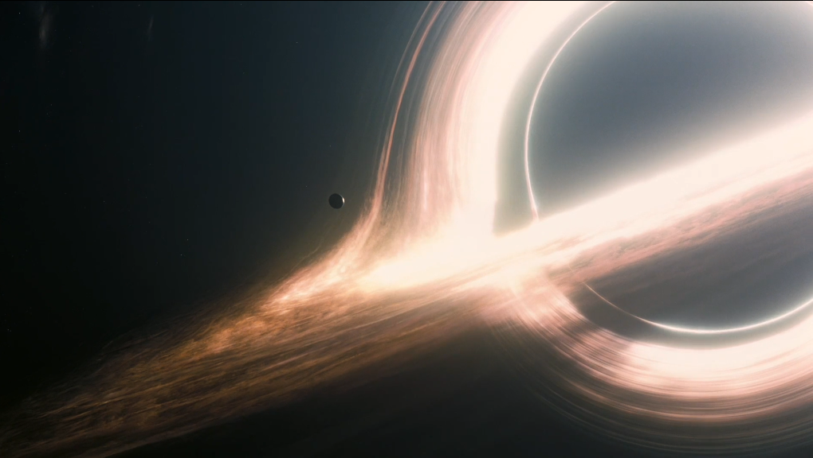

เหตุผลที่ผมมาเรียนที่นี่ และต้องเป็นคณะนี้ สาขานี้ เพราะว่าผมมีความสนใจในด้าน ฟิสิกส์ดาราศาสตร์ (Astrophysics) เป็นพิเศษ ผลงานที่ผมทุ่มเทแรงใจและแรงสมองมากที่สุดในช่วงมัธยมศึกษาตอนปลาย คือการศึกษาและพยายามทำความเข้าใจเกี่ยวกับ หลุมดำ (Black Hole)
ผมใช้รูปแบบทางคณิตศาสตร์ในเรื่องของเศษส่วน เพื่อโต้แย้งและไม่เชื่อแค่เพียงว่าแกนของหลุมดำมีค่าเป็นอนันต์ ซึ่งผิดจากมาตรฐานที่ควรจะเป็น โดยพระเอกของงานวิจัยนี้คือการนำค่าความยาวมัคส์ พลังค์ (Max Planck) ซึ่งเป็นความยาวที่เล็กที่สุดมาใช้คำนวณ แทนการแทนค่าพื้นที่เป็น 0 ตรงๆ
ในตอนแรก ผลลัพธ์ที่ออกมามันค่อนข้างผิดธรรมชาติและขัดกับทฤษฎีไปหมด แต่เพราะผมเชื่อมั่นในแนวคิดนี้ ผมจึงไม่ยอมแพ้และพยายามพิสูจน์ จนกระทั่งผลการคำนวณออกมาประสบความสำเร็จในที่สุด
สุดท้ายนี้ แม้ผมอาจจะยังไม่มีความรู้ในด้านกลศาสตร์ควอนตัมมากนัก แต่มหาวิทยาลัยแห่งนี้จะเป็นเหมือนข้อมูลชุดใหม่ที่ทำให้ผมได้ก้าวข้ามขีดจำกัดของตัวเองอีกครั้ง และแน่นอนครับ ผมจะไม่หยุดอยู่แค่ที่นี่ หากได้รับโอกาสและทุนศึกษาต่อต่างประเทศ ผมพร้อมที่จะก้าวต่อไปเพื่อวิจัยและไขปริศนาของจักรวาลนี้ให้อย่างถูกต้องที่สุดครับ ขอบคุณครับ
